Chapter 5 Results
NOTE: We have taken special steps to ensure that colorblind people can visualise our graph as accurately as possbile.
5.1 How does the data look on the map?
Let us start by looking at the spatial orientation of the number of accidents by creating a density plot.
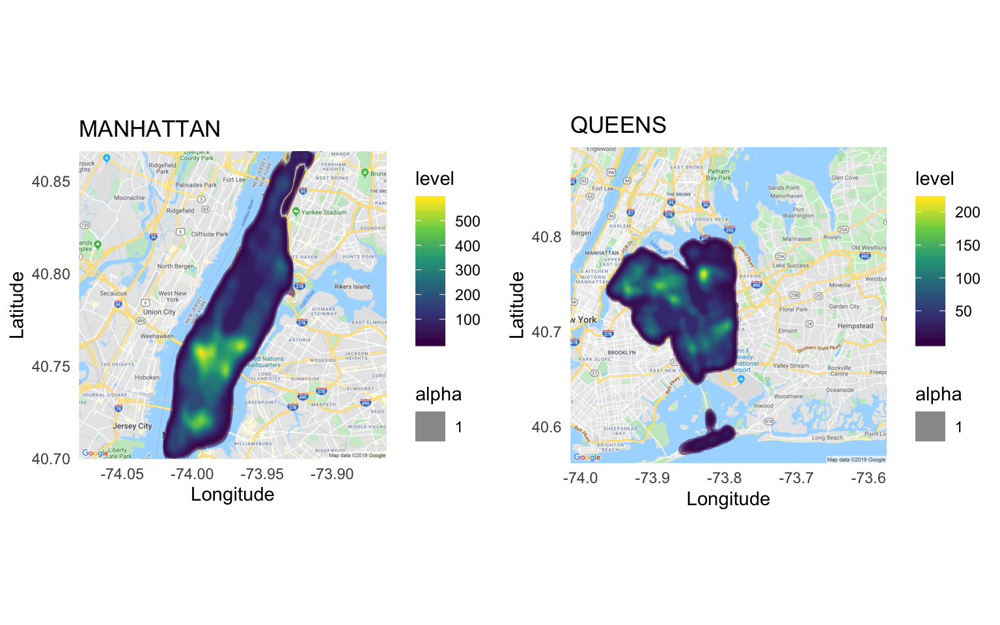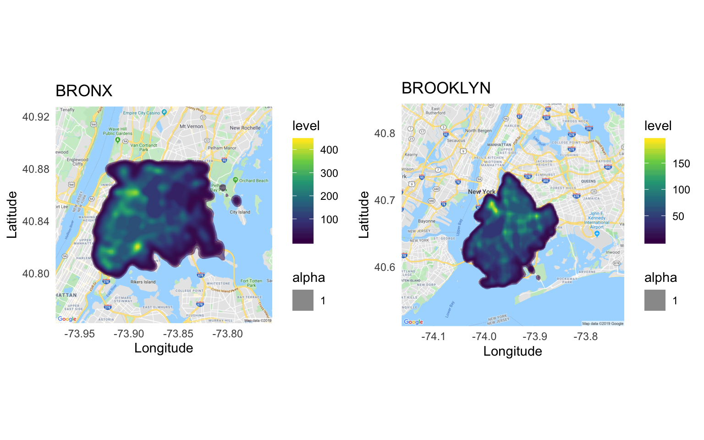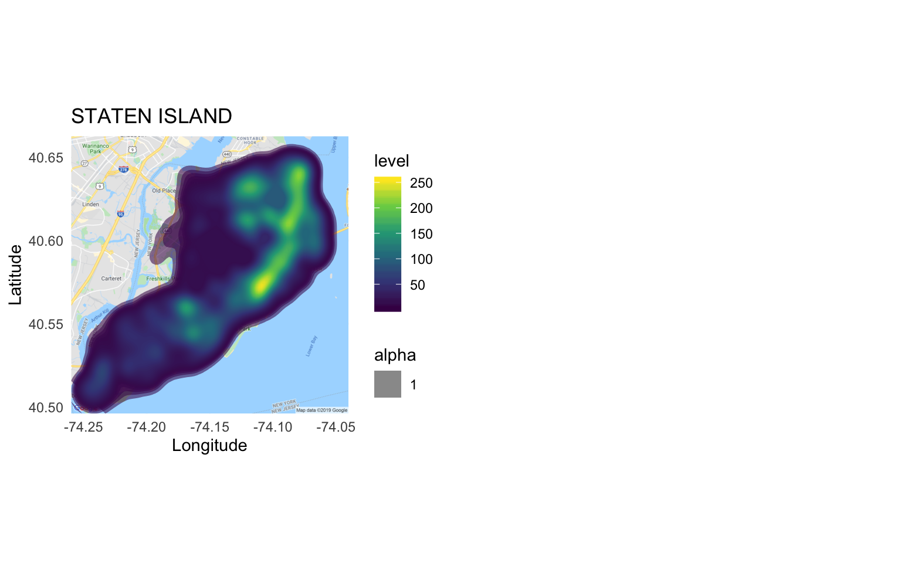
We can clearly see for all the boroughs that the accidents are not evenly distributed and there are certain zones where the density is higher. This is one of the factors that gives way to our analysis.
5.1.1 Inference for Manhattan
The higher density of accidents seem to be concentrated towards the Midtown-Downtown part of the borough. This might be due to high commotion at these locations. Firstly, these locations are have high population density which increases the chance of accidents, especially with people jay-walking. Secondly, a lot of offices are in these locations and there is a high probability of accidents during the rush hour as people come from different places to work. Thirdly, these locations have tourist attractions and that leads to more people coming to these locations from various places, leading to increased chances of accidents. Lastly, these locations (especially Midtown) have a lot of bars and other nightlife restaurants. People may be drinking and driving leading to higher density of accidents.
5.1.2 Inference for Queens:
The highlighed zone in Queens’ plot is Flushing area which is densely populated and has popular spots, such as Queens’ library, SSA office, USPS etc. The library generally attracts more students and may lead to increased traffic because of them. Also, people and officials go to SSA office for official work and such places are generally crowded. For USPS, they generally have their delivery trucks coming in and going out, which contributes significantly to traffic.
5.1.3 Inference for Bronx:
The highest density spot is marked by the merger of two popular expressways; the Sheridan expressway and Bruckner expressway. It becomes more clear now why this is a dense spot as merger of expressway act as bottleneck for the traffic, where people usually drive as faster speeds, than in the cities.
5.1.4 Inference for Brooklyn:
The highlighted spot corresponds to the ending of Brooklyn bridge which connects Manhattan to Brooklyn. This is expected as at such bridge junctions, bottlenecks occur. Also, people from Brooklyn generally come to Manhattan for work or for other attractions. Thus, leading to increase in chances of accidents, especially during the rush hour.
5.1.5 Inference for Staten Island:
In Staten Island, then accident prone areas seem to be Oakwood, Midland Beach, New Dorp, Richmond and Bay Terrace
5.1.6 Inference for Brooklyn:
The highlighted spot corresponds to the ending of Brooklyn bridge which connects Manhattan to Brooklyn. This is expected as at such bridge junctions, bottlenecks occur. Also, people from Brooklyn generally come to Manhattan for work or for other attractions. Thus, leading to increase in chances of accidents, especially during the rush hour.
5.1.7 Inference for Staten Island:
In Staten Island, then accident prone areas seem to be Oakwood, Midland Beach, New Dorp, Richmond and Bay Terrace
5.2 Which are the most accident-prone Boroughs?
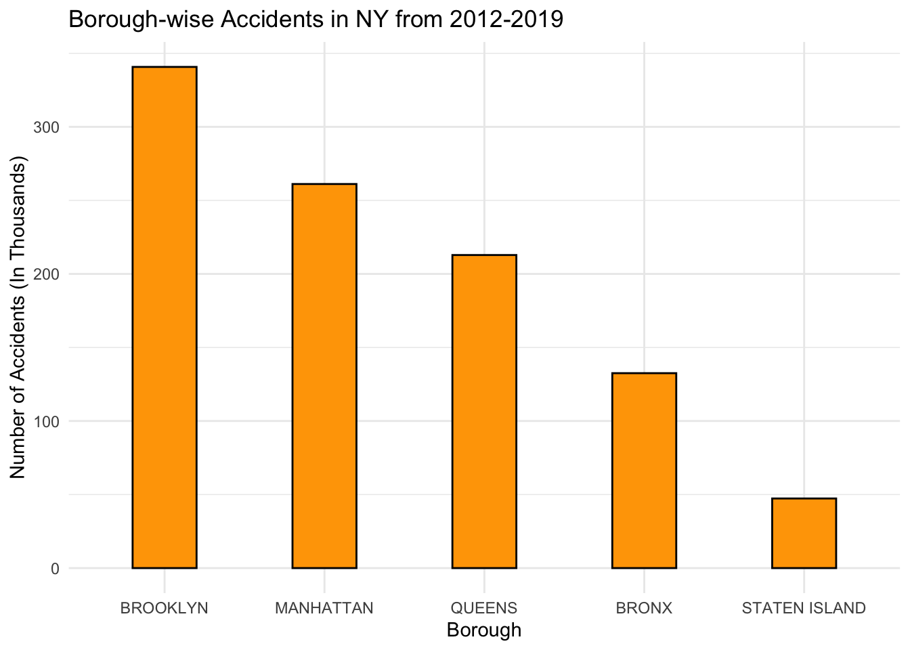
It is clear that over all these years, Brooklyn has had the most number of accidents with over 340,000 cases bring reported, followed by Manhattan with about 260,000 incidents. These numbers don’t really make a lot of sense, unless we bring in another parameter that would help us assess the most accident-prone out of all these borough. One such parameter that I can think of is Area of the Boroughs. Another could be Population Density. I’m going to find out the no. of accidents happening in each borough with respect to the area of each borough, i.e. Accident-Density.
I’m going to manually create a list of the areas of the five boroughs, I could scrape it using rvest, but I feel its too much of an effort for just getting five values, so I prefer manual entries in this case. Source : https://en.wikipedia.org/wiki/Boroughs_of_New_York_City.
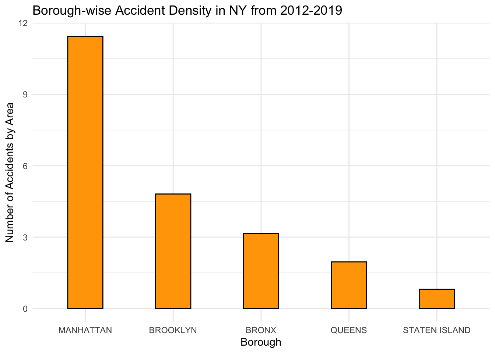
Well, turns out, although Brooklyn had the most number of accidents happening over the years, Manhattan has almost twice the accident-density than Brooklyn and well over thrice than the rest of the Boroughs. It explains a lot about what we see in the density plot of Manhattan, and that it is the most accident-prone borough out of all.
5.3 Analyzing accident trends over time.
5.3.1 How are the accidents distributed over Years?
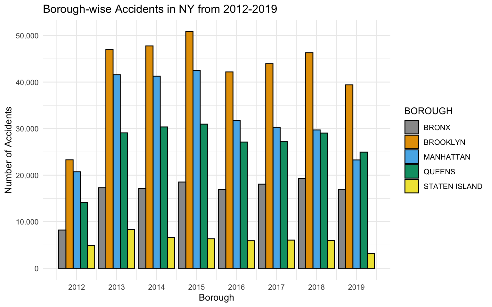
Firstly, since the dataset has comparitively less values for the year 2012, that’s why the bars for that year are significantly smaller than compared to the rest. This is probably because of the way the data was collected, and the amount of records that were digitized. It would only be fair to compare the trends from 2013 onwards as we have comparable amount of data over the rest of the years until 2019.
We see that the no. of accidents were gradually increasing in almost all the boroughs(except Staten Island), over the years 2013-2015.
We also see that there is a significant drop in the numbers in the year 2016, right after the year 2015 where the number of accidents were the highest. A further investigation into this led us to the “Vision Zero” program announced and implemented by the Mayor of NYC, specifically aimed at reducing traffic accidents and making the streets more safer for the people. Source : https://www1.nyc.gov/office-of-the-mayor/news/013-17/vision-zero-mayor-de-blasio-2016-saw-fewest-fatalities-ever-new-york-city-streets/#/0
Although, the program did pretty well after the first year since its inception, there has been a steady rise in the years after it, specifically in 2017 and 2018.
We’re still in 2019, and the data that we have are of the months until the start of November. Hence, it can’t be compared directly with the previous years yet.
5.3.1.1 What are the monthly trends of Accidents?
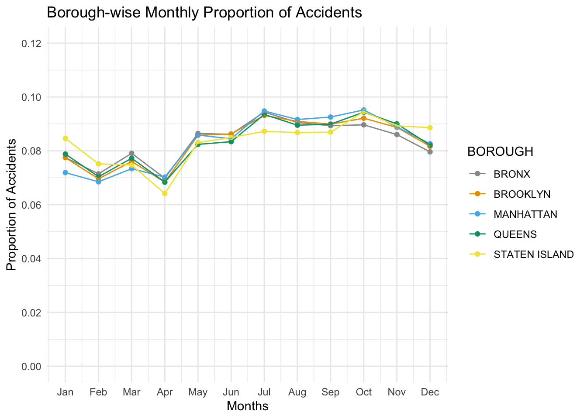
The monthly trend does not change much except for the slight drop in April, the cause of which remains unknown. But we can speculate that the reason is because April marks the end of snowfall and increased daylight which improves the weather conditions and decreases the collisions.
The number of collisions in the winter does not decrease ,although technically people tend to wander out less often in the winter. This is because the probability of collision increases in the winter owing to the rough weather which balances out the factor mentioned before to give a (almost) constant yield of crashes throughout the year.
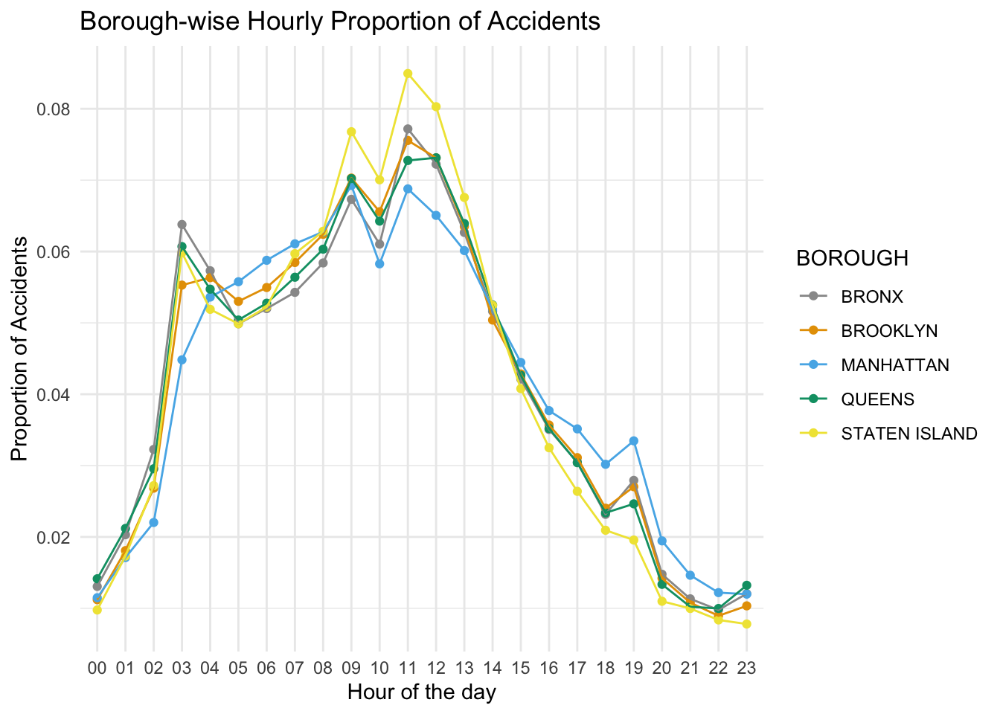
The distribution of accidents over hours of the day shows that most accidents occur during noon, between 11am and 12pm. This could be the result of delivery trucks which often go around the city during noon or because people wander out to grab lunch from their favourite restaurants.
The amount of accidents slowly rise from 7AM to 9AM as people start their day and travel to their workplaces. The mild peak at 6PM to 7PM could account for people travelling back to their homes.
The sudden rise at odd hours of 3am-4am is representative of people returning after enjoying their “nightlife”.
5.4 Are there any extreme accidents?
We will now try to find out the accidents where significantly high number of people were killed or injured, and further try to investigate them.
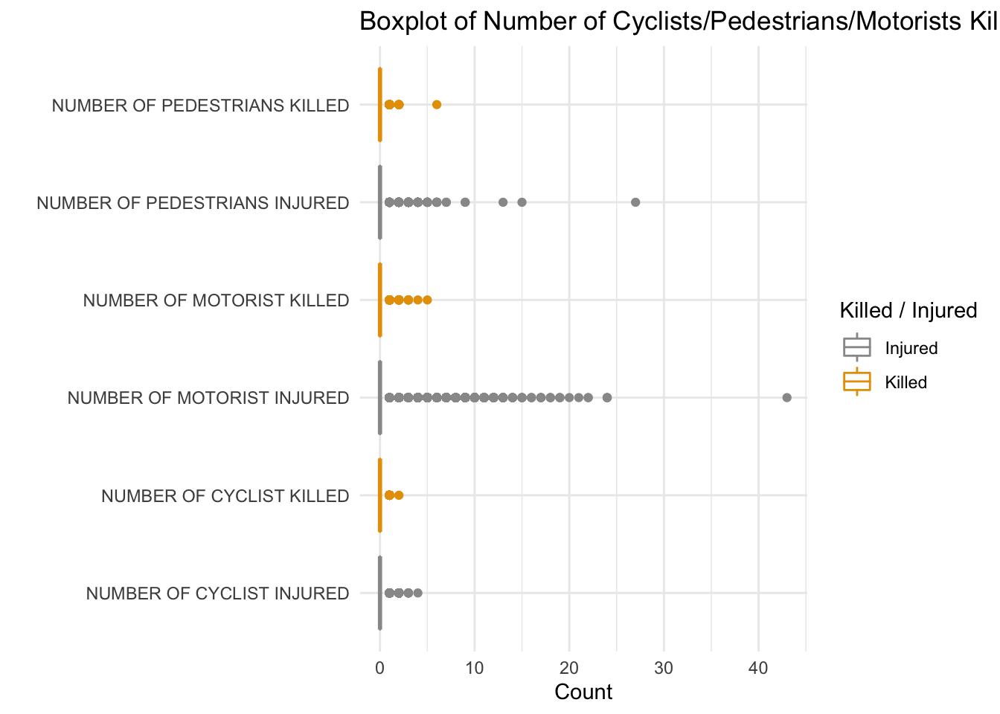
We can clearly see that there is one incidence when more than 25 pedestrians were injured. After looking through the data and investigating online, we were able to find a corresponding headline in The New York Times. This incident corresponds to May 18, 2017, when a car rammed into pedestrians in Time Square, killing 1 and injuring more than 20 people. (source: https://www.nytimes.com/2017/05/18/nyregion/times-square-crash.html)
Next, we can see the most significant outlier of the plot, that is when more than 40 motorists were injured. After investigating online and browsing through the data, we were able to find out that this correponds to September 9, 2013 when an MTA bus collided with a car in Brooklyn. 40+ pepople inside the bus were injured. Since these people were inside the bus, they are considered in the category of motorists. (source: https://newyork.cbslocal.com/2013/09/09/brooklyn-bus-accident-leaves-at-least-6-injured/)
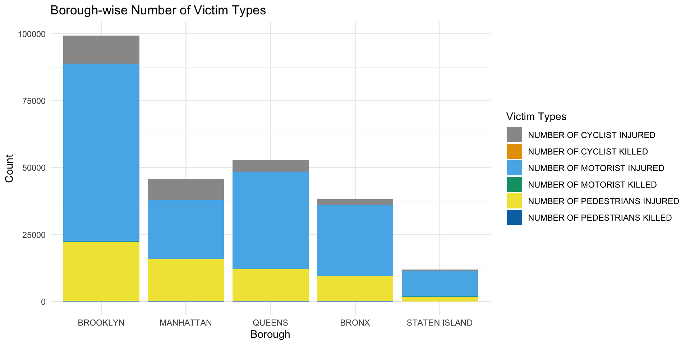
## # A tibble: 6 x 3
## BOROUGH `Victim Types` value
## <fct> <chr> <dbl>
## 1 STATEN ISLAND NUMBER OF CYCLIST KILLED 3
## 2 BRONX NUMBER OF CYCLIST KILLED 9
## 3 MANHATTAN NUMBER OF CYCLIST KILLED 20
## 4 QUEENS NUMBER OF CYCLIST KILLED 21
## 5 STATEN ISLAND NUMBER OF PEDESTRIANS KILLED 27
## 6 MANHATTAN NUMBER OF MOTORIST KILLED 31## # A tibble: 6 x 3
## BOROUGH `Victim Types` value
## <fct> <chr> <dbl>
## 1 MANHATTAN NUMBER OF PEDESTRIANS INJURED 15704
## 2 MANHATTAN NUMBER OF MOTORIST INJURED 22009
## 3 BROOKLYN NUMBER OF PEDESTRIANS INJURED 22121
## 4 BRONX NUMBER OF MOTORIST INJURED 26375
## 5 QUEENS NUMBER OF MOTORIST INJURED 36231
## 6 BROOKLYN NUMBER OF MOTORIST INJURED 66357The stacked plot above does not reveal much about the extreme values as they get squashed due to scale. Thus we have presented a separate analysis below. As far as the distribution goes:
Brooklyn leads in every parameter:
Manhattan and Queens have quite similar distributions.
Staten Island seems to rank low in all parameters owing to its low population
The lowest values are of NUMBER OF CYCLIST KILLED in 4 of the 5 boroughs, this goes to prove that the measures taken to reduce fatal cycle collisions after 2016 has been effective.
NUMBER OF MOTORIST KILLED are shockingly high in BROOKLYN, being nearly double the next highest borough, which is QUEENS. This calls for immediate policy changes to curb such collisions.
5.5 How bad were the accidents, and how many of them led to deaths?
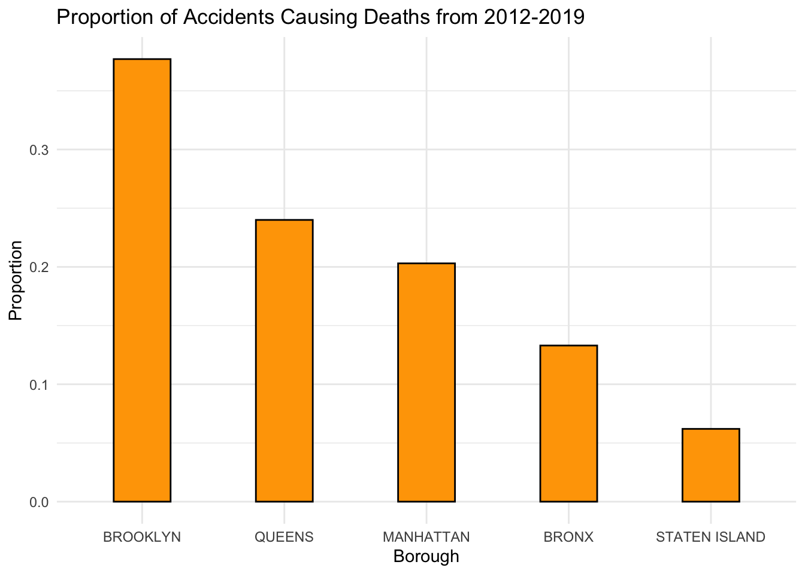
Although the most-accident prone out of all the boroughs was Manhattan, it’s evident that the most lethal(in terms of proportion of accidents causing deaths) of all the boroughs is Brooklyn.
Even Queens, which had over 1/3rd of the accident-density than that of Manhattan, has a greater proportion of accidents that lead to deaths.
This leads us to infer that even though Manhattan is the most accident-prone Borough, most of the accidents don’t cause deaths, infact upon further investigation on online sources, it is seen that many cases wherein there are quite a lot of accidents that lead to no/minor injuries, but they have to be reported to file for insurance claims of the vehicles and the victims involved. Also, another reason is that Manhattan is a pretty densely-populated area with highly regulated traffic rules and slow zones, which might be one of the causes that although this increases the probability of accidents happening, the impact of the collision of the vehicles at low speeds might not lead to deaths.
5.6 What are the actual numbers of Injuries/Deaths due to accidents over the years?
We will plot the number of people killed or injured in the past years.
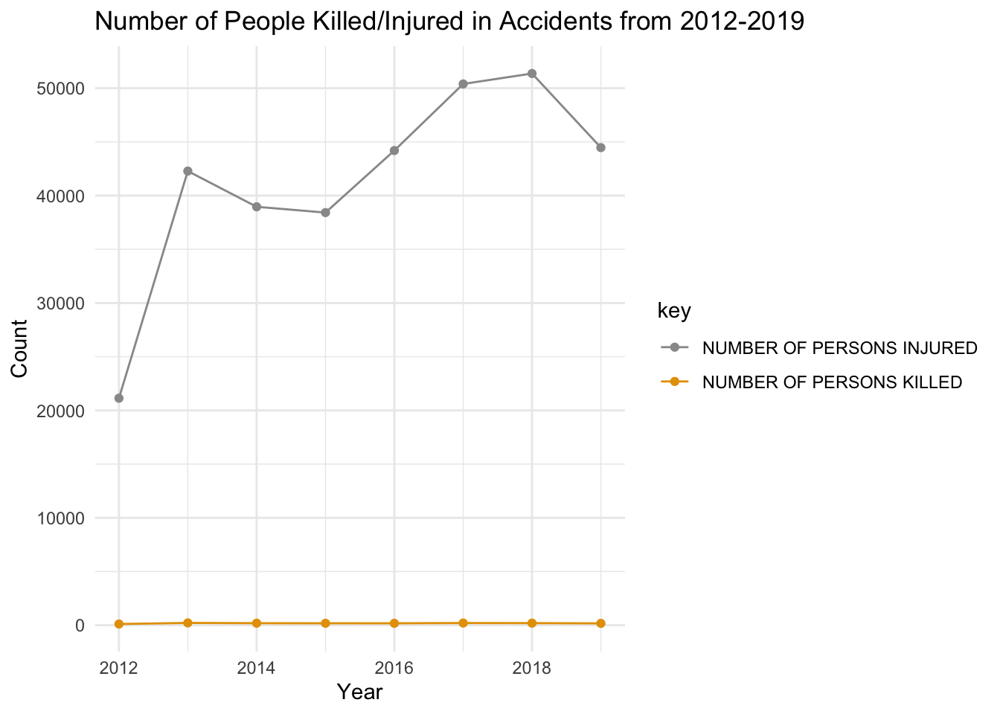
We are able to see the trend for number of persons injured outweight the number of people killed, thus, we are not able to visualise the data of number of people killed. For this, we will create another plot just to visualise the number of people killed.
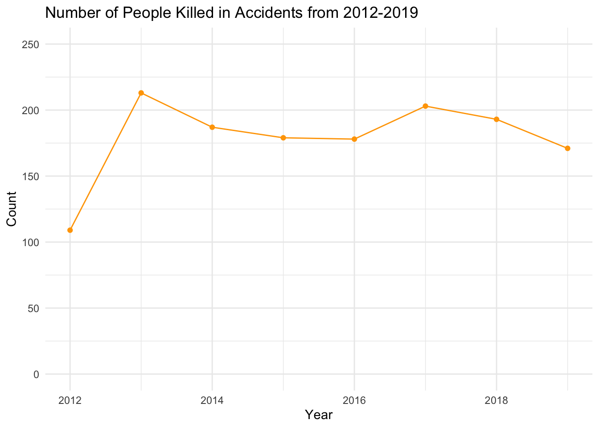
We can see that there was a sharp increase in both, the number of people killed and in the number of people injured from 2012 to 2013. This might be because we have more data available from 2013, than from 2012.
There was a decline in the number of persons killed from 2013 to 2016, and in the nunmber of persons injured from 2013 to 2015.
Both the number have increased from 2016-2017.
One trend which we can notice is that, when the number of people killed were on a rise from 2016 to 2017, there came a drop in the numbers from 2017 to 2019. This may be the outcome of the Vision Zero policy that was implemented by the government of NY in 2016, which aimed at reducing the number of fatalities and injuries during accidents. The number of people injured from 2016 to 2018 (not including 2019 as the year is still running) have increased, but it’s pace has greatly decreased compared to 2 years before that year, that is, the pace of increase in number of people injured has definitely slow down from 2017-2018, as compared to 2015-2017. A reason for this can be that under Vision Zero poilcy, governemnt decalred some slow zones with speed limit of 25mph. Thus, there were still accidents (indicating the slowed down number of injuries), but the impact of accidents was reduced because of the slow speed of the vehicles. Meaning, the accidents were not a fatal as they earlier were. Seems like th Vision Zero policy had a positive impact on the number of people killed/injured.
Both the number have increased from 2016-2017.
One trend which we can notice is that, when the number of people killed were on a rise from 2016 to 2017, there came a drop in the numbers from 2017 to 2019. This may be the outcome of the Vision Zero policy that was implemented by the government of NY in 2016, which aimed at reducing the number of fatalities and injuries during accidents. The number of people injured from 2016 to 2018 (not including 2019 as the year is still running) have increased, but it’s pace has greatly decreased compared to 2 years before that year, that is, the pace of increase in number of people injured has definitely slow down from 2017-2018, as compared to 2015-2017. A reason for this can be that under Vision Zero poilcy, governemnt decalred some slow zones with speed limit of 25mph. Thus, there were still accidents (indicating the slowed down number of injuries), but the impact of accidents was reduced because of the slow speed of the vehicles. Meaning, the accidents were not a fatal as they earlier were. Seems like th Vision Zero policy had a positive impact on the number of people killed/injured.
5.7 What are the most common causes?
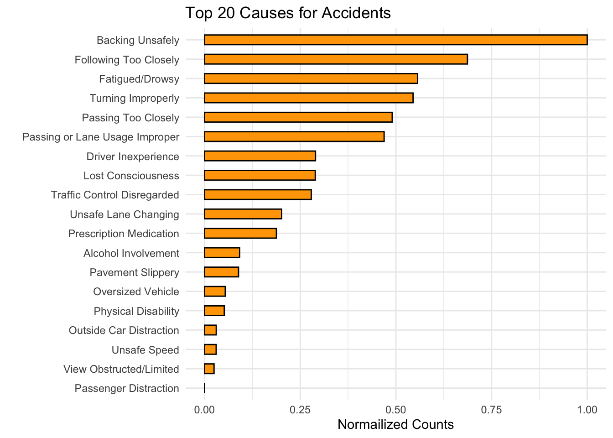
We’ve filtered out the most common and uninformative cause of accidents (Such as Driver Inattention/ Distraction, Failing to yeild Right of way ) and the rows where the cause is unspecified since these causes won’t help the analysis as much and actually do skew the distribution in a way that the other causes seem to become quite uninterpretable given the scale.
After this, we find the most important cause to be Backing Unsafely, Following too closely, Passing too Closely, Turning Improperly, Traffic Conrol Disregarded, etc. all of which suggest that more often than not, these accidents are also directly related to the root cause of Driver Inattention/ Distraction or lack of traffic safety knowledge. Either ways, traffic rule awareness programs that emphasize on the importance of concentraing on the driving and being focused, and stricter actions against violations might help to lower such cases.
We also see reasons such as Alcohol Involvement, Prescription Medication(Drugs) which are clear cases of violations of traffic rules, and point towards the need for greater enforcement and stricter fines in such cases.
Finally, there are also reasons such as Pavement Slippery, View Obstructed/Limited (Mostly at turns and intersections) which suggest that the government could put some more efforts into improving the current infrastructure for Traffic Safety.
5.7.1 Are these causes common amongst all the Boroughs?
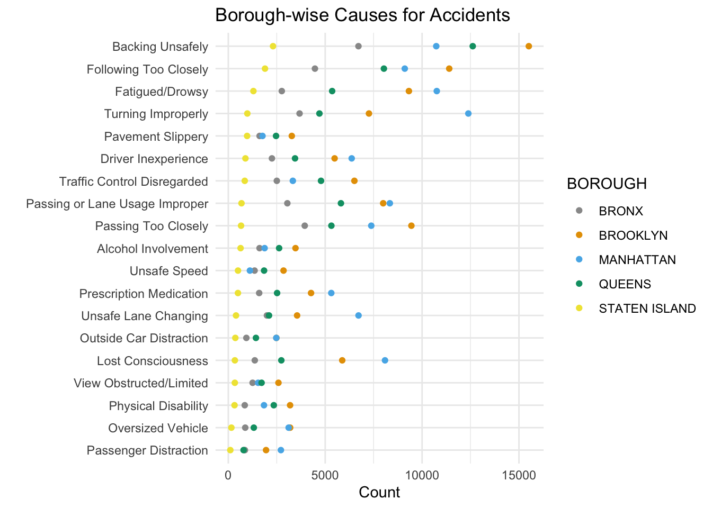
Firstly, we do see a general pattern of the causes of accidents being common amongst all the borough, except for a few more interesting facts.
Manhattan and Brooklyn have a surprisingly higher number of accidents caused due to ‘Lost Consciousness’, almost high enough to take that to about 6th rank in the overall list of causes of accidents.
‘Passing too closely’ becomes the third highest cause in Brooklyn.
There are also a high number of cases of Passing or Improper Lane Usage in Brooklyn and Manhattan.
Queens has a surprisingly high number, even higher than Manhattan of cases involved with Backing Unsafely.
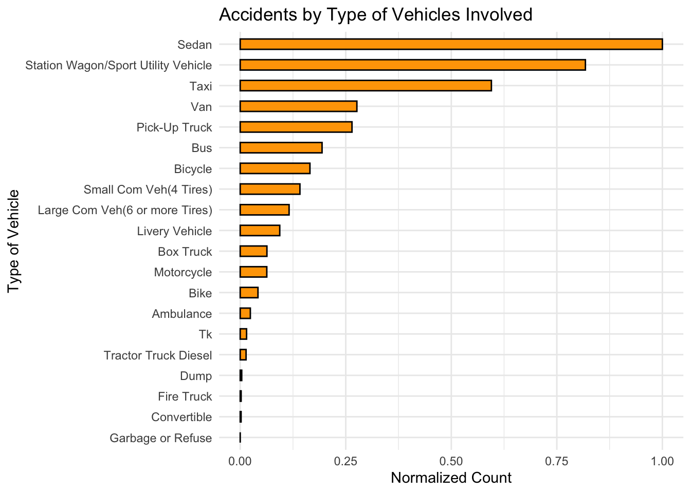
Other than the obvious maximum of consumer vehicles such as SUV and Sedans,the next in line are the commercial 4/6 wheelers, taxis and busses. The categories Sedans, SUV and Taxi account for most of the crashes but this is rooted on the fact that they are an aggregation of a large type of vehicles or , in other words ,represent a huge majority of the vehicles on the road. Thus, this graph does not divulge much information due to the aggregated nature of the categories, and we shall focus on the time and spatial analysis of the crashes.
Let’s see the most accident-prone places in terms of no. of Accidents. Since, the data specifies that the police officer usually notes down the closest intersection of street and avenue, it would be logical to find out the most accident-prone places based on these parameters, and I think this is the best approximation that we can get given the data.
5.8 What are the overall Top-25 most-accident prone intersections?
Now, we’re going to try and mark these places on the map, ordered in the format (Rank. Cross Street Name).
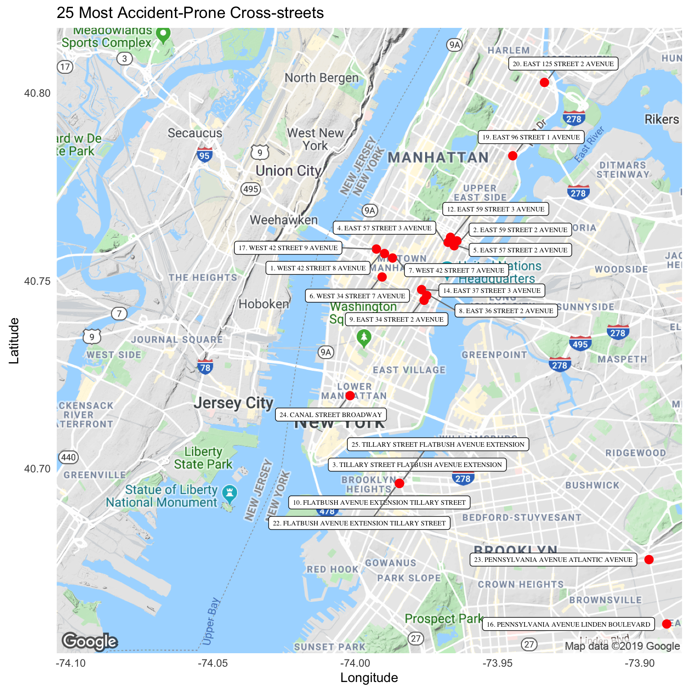
Straight off the bat, its clearly visible that Staten Island has no cross-street within the 25 most accident-prone intersections. Another interesting observation is that clusters are seen in this graph, especially in Manhattan, wherein very specific regions have such a high no. of accidents reported. Surprisingly, 2nd Avenue(Manhattan) appears 5 times in this top 25 list, and particularly in a two specifically clustered regions, once in the (34th St. and 36th St. Cluster) and once in the (57th St and 59th St. Cluster). Also, Flatbush Avenue(Brooklyn) shows a similar trend, having a cluster of intersections that appear twice in the top 10. These are far too interesting observations to not dig deeper into, so I’m going to do exactly that, and hopefully find out the reason for this.
I’m going to zoom in on the clusters in Manhattan, specifically on the four intersections i.e. 2nd and 3rd Avenue across 57-59th streets.
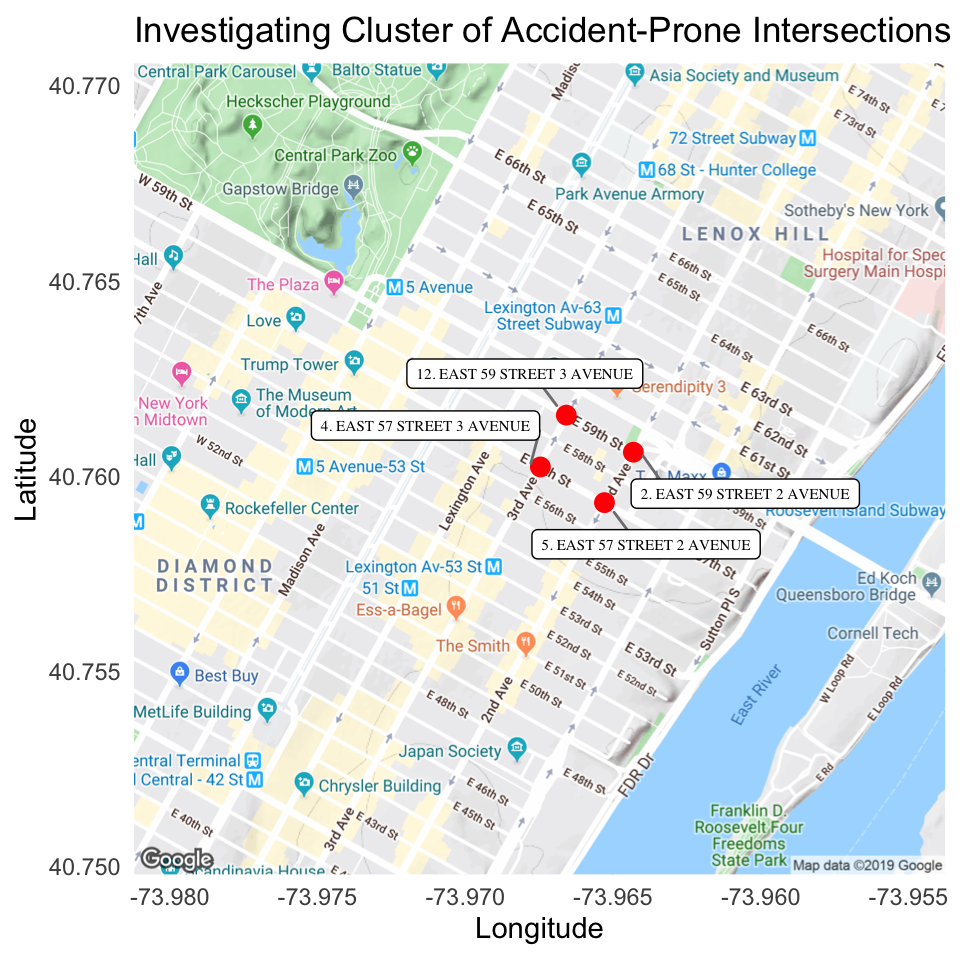
Let’s see what else we can find out about these 4 intersections. It’d be interesting to see the types of victims involved in accidents at these intersections.
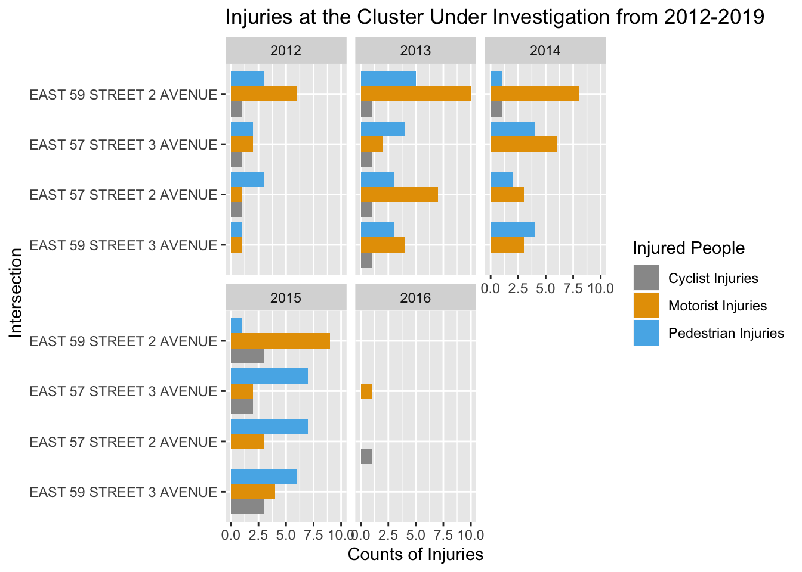
It is very surprising, and very odd that there are absolutely no cases(or no records) of accident cases that led to injuries after 2016 at these four intersections, also 2016 was the year when Vision Zero when vision zero was started being implemented in NYC.
It is probably a huge anamoly in the recording of the data, or some measures implemented in the programs have worked wondrefully. Either ways, we tried to dig into what might be causing these accidents and some of the reason that we found were:
Location/Context: Heavy traffic leading to Queensboro Bridge. Land Use: Mixed use, ground floor commercial, high-rise residential Bus Routes: M15 SBS/Local Through Truck Routes: 1st Avenue, 57th Street Bike Routes: Potential route on 1st Avenue
Issues Identified: - Heavy vehicle volumes - Long crossing distances
Implemented Improvements: - Installed northbound left turn arrow on 1st Avenue to help organize turns and reduce pedestrian-vehicle conflicts - Modified signal timing (split phase) to accommodate heavy left turns - Installed pedestrian countdown signals - Installed “LOOK” safety pavement markings at crosswalks to alert pedestrians to oncoming traffic.
Source: https://www1.nyc.gov/html/dot/downloads/pdf/2009-nyc-top-20-pedestrian-crash-locations.pdf